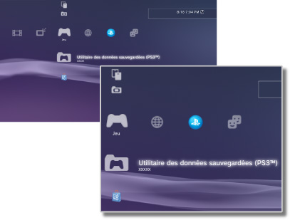

Jeu > Catégorie Jeu
Catégorie Jeu
Les icônes suivantes sont affichées sous  (Jeu). Les icônes affichées varient en fonction des conditions d'utilisation.
(Jeu). Les icônes affichées varient en fonction des conditions d'utilisation.

 |
PlayStation®Store | Pour afficher des informations provenant de PlayStation®Store. |
|---|---|---|
 |
Quitter le jeu | Pour quitter le logiciel au format PlayStation®3. Cette icône ne s'affiche que pendant le jeu. |
 |
(nom du titre) | Pour lire un titre de logiciel au format PlayStation®3. Une image est affichée lorsque l'icône est sélectionnée. |
  |
Disque au format PlayStation®2 | Pour lire un logiciel au format PlayStation®2. |
 |
Disque au format PlayStation® | Pour lire un logiciel au format PlayStation®. |
 |
Utilitaire des données sauvegardées (PS3™) | Pour copier / supprimer ou afficher des informations sur les données sauvegardées pour le logiciel au format PlayStation®3. |
 |
Utilitaire des données sauvegardées (minis / PSP™) | Pour copier / supprimer ou afficher des informations sur les données enregistrées pour les minis et le logiciel PSP™Game(jeu PSP™). |
 |
Utilitaire de Memory Card | Pour créer et attribuer des fentes pour des cartes mémoires internes afin d'enregistrer des données pour logiciel au format PlayStation®2 / PlayStation®. Vous pouvez également copier / supprimer ou afficher des informations sur les données sauvegardées. |
 |
Utilitaire des applications du système PS Vita | Quand vous sauvegardez les données enregistrées des jeux utilisés sur le système PS Vita, ou les données d'application (données de jeu), du système PS Vita sur le système PS3™, les données sont enregistrées dans l'utilitaire des applications du système PS Vita. |
|
Utilitaire des données de jeu | Des données supplémentaires peuvent être sauvegardées pour certains jeux. Vous pouvez supprimer ou afficher des informations sur les données. |
 |
(Logiciel au format PlayStation®3 ou PlayStation®2 installé dans le stockage système) | Logiciel au format PlayStation®3 ou PlayStation®2 installé dans le stockage système. Une image miniature du jeu est affichée. |
| (Données téléchargées sur le stockage système) | Cette icône s'affiche pour représenter les données de jeu ou d'extension téléchargées sur le stockage système. Lors du démarrage, les données sont installées. L'icône varie selon le type de données. |
Conseils
 ou
ou  est affiché pour le contenu limité par le contrôle parental. Pour lire le contenu, saisissez un mot de passe en quatre positions. Le mot de passe peut être défini sous
est affiché pour le contenu limité par le contrôle parental. Pour lire le contenu, saisissez un mot de passe en quatre positions. Le mot de passe peut être défini sous  (Paramètres) >
(Paramètres) >  (Paramètres sécurité).
(Paramètres sécurité).- Si vous connectez un périphérique non compatible avec la norme HDCP (High-bandwidth Digital Content Protection) au système à l'aide d'un câble HDMI, les données vidéo et/ou audio ne peuvent pas être reproduites à partir du système.
- Le contenu d'un Blu-ray Disc protégé par des droits d'auteur ne peut être reproduit qu'en 1080p quand vous utilisez un câble HDMI connecté à un périphérique compatible avec la norme HDCP.
- Dans de rares cas, il se peut que le système PS3™ soit incapable de lire correctement des disques et d'autres supports. Cela est principalement dû à des différences en matière de processus de fabrication ou d'encodage du logiciel.
Avis
- Il est possible que certains titres de logiciels au format PlayStation®2 ou PlayStation® fonctionnent différemment avec le système PS3™ par rapport aux systèmes PlayStation®2 ou PlayStation®, ou qu'ils ne fonctionnent pas correctement avec le système PS3™.
- Les disques au format PlayStation®2 ne peuvent pas être lus sur certains systèmes PS3™. Pour plus d'informations, consultez [Types de disques lisibles], visitez le site Web SIE de votre région ou reportez-vous à la documentation qui accompagne votre système PS3™.